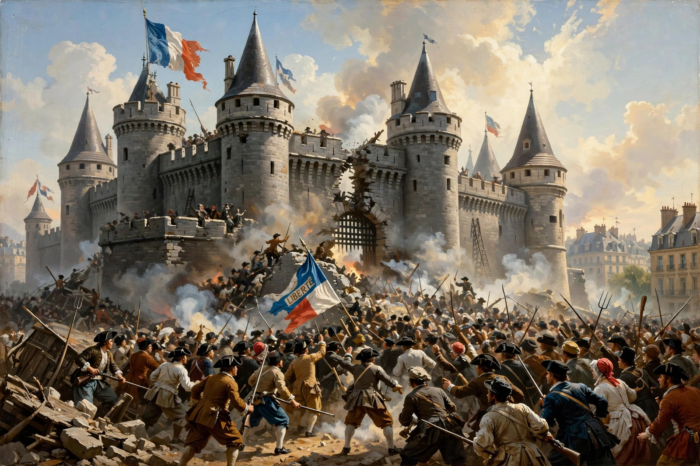

From Wikipedia, the free encyclopedia
| French Revolution | |
|---|---|
| Date | 1789–1799 |
| Key events | Storming of the Bastille (14 July 1789), Declaration of the Rights of Man, Reign of Terror |
| Outcome | End of the Bourbon monarchy; rise of Napoleon |

The French Revolution (1789–1799) was a period of radical political and social change in France that overthrew the Bourbon monarchy, dismantled the privileges of the aristocracy and church, and proclaimed the rights of citizens. It began amid fiscal crisis and food shortages with the Estates-General of 1789 and the storming of the Bastille.
The Revolution produced the Declaration of the Rights of Man and of the Citizen, abolished feudalism, executed Louis XVI and Marie Antoinette, descended into the Reign of Terror under Robespierre, and ended with Napoleon's coup of 1799. Its ideals of liberty, equality and fraternity — and its violence — shaped modern politics across Europe and the world, much as the Russian Revolution would a century later.